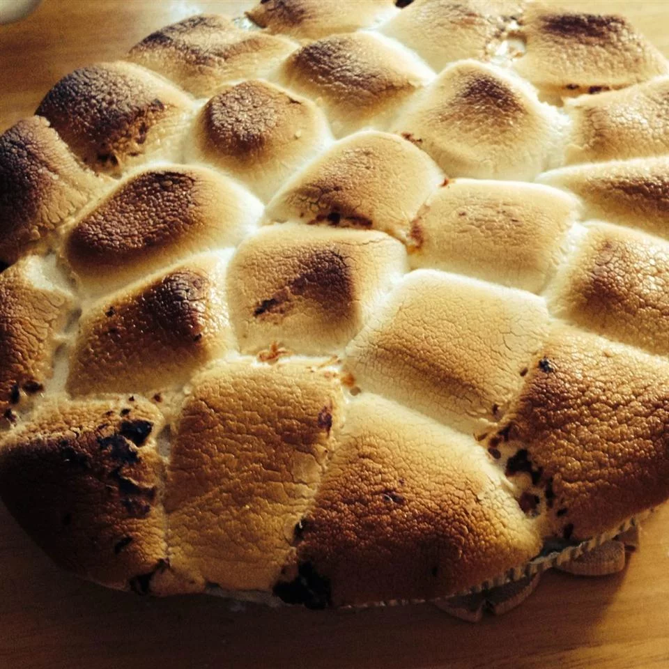

Candied Sweet Potatoes

A delicious, sweet version of candied sweet potatoes.
Preperation time: 5 mins
Cook time: 35 mins
Ingredients
- 4 pounds sweet potatoes, quartered
- 1 ¼ cups margarine
- 1 ¼ cups brown sugar
- 3 cups miniature marshmallows, divided
- ground cinnamon to taste
- ground nutmeg to taste
Steps
- Preheat oven to 400 degrees F (200 degrees C). Grease a 9x13 inch baking dish.
- Bring a large pot of water to a boil. Add potatoes and boil until slightly underdone, about 15 minutes. Drain, cool and peel.
- In a large saucepan over medium heat, combine margarine, brown sugar, 2 cups marshmallows, cinnamon and nutmeg. Cook, stirring occasionally, until marshmallows are melted.
- Stir potatoes into marshmallow sauce. While stirring mash about half of the potatoes, and break the others into bite-sized chunks. Transfer to prepared dish.
- Bake in preheated oven for 15 minutes. Remove from oven and cover top evenly with remaining marshmallows. Return to oven and bake until marshmallows are golden brown.